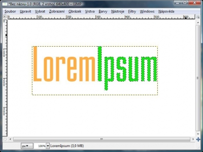

Web je již jen v režimu pro čtení a není možné přidávat nové komentáře nebo dotazy do fóra. Díky za přízeň.
Main menu
You are here
Lesklé logo
23. August 2009 - 19:36 — Lukáš
- Vytvoříme nový obrázek s libovolnými rozměry
- Zvolíme nějaké pěkné písmo, já použiju Mekanik LET Plaint
- Napíšeme nějaký text, ujistíme se, že náš text je alespoň 100px od okrajů. Pokud zvolíme text s víc než jedním slovem, píšeme bez mezer a první písmeno každého slova napíšeme Velkým tiskacím.
- Klepneme pravým tlačítkem na vrstvu s textem a v nabídce vybereme „Alfa do výběru“
- Klepneme na nástroj „Kouzelná hůlka“, pomocí ní označíme druhé slovo a vybarvíme jinou barvou
 - Klepneme na volbu Vybrat a zvolíme „Nic“
- Klepneme na vrstvu s textem pravým tlačítkem, a zvolíme „Alfa do výběru“
- Vytvoříme novou vrstvu. Nazveme ji např. Okraj a umístíme ji pod vrstvu s textem
- Klepneme na Vybrat → Zvětšit. Zvětšíme cca o 15 – 25, záleží na velikosti Vašeho textu.
- Výběr vyplníme černou barvou
- Přejdeme na Vybrat → Nic
- Přepneme na Výběr eliptických oblastí a překryjeme asi polovinu loga
- Vytvoříme novou vrstvu s názvem „Lesk“ a přemístíme ji úplně nahoru
- Náš kruhový výběr vyplníme bílou barvou a krytí vrstvy nastavíme na 20%
- Hotovo :-)
{kind=link}
{kind=link}
{kind=link}
{kind=link}
Kategorie:
Web je již ukončen. Nebude zde přibývat žádný nový obsah. Případné dotazy prosím na l.bacovsky(a)outlook.cz
Comments
Dobrý den. Chtěla jsem se
Uložit obrázek
Pozor tu poslední větu je
Re: Dobrý den. Chtěla jsem se
krytí vrstvy
Krytí vrstvy se nastavuje v
Dobrý den můžete mi natočit
Re: Dobrý den můžete mi natočit
Lukáši, tohle je dobrý článek
tak moznosti mas nekolik :)
Re: Lesklé logo
Re: Lesklé logo
Re: Lesklé logo
Re: Lesklé logo
Re: Lesklé logo
Re: Lesklé logo
Re: Lesklé logo
Re: Lesklé logo
Re: Lesklé logo
Re: Lesklé logo
Re: Lesklé logo
Re: Lesklé logo
Re: Lesklé logo
Re: Lesklé logo
Re: Lesklé logo
Re: Lesklé logo
Re: Lesklé logo
Re: Lesklé logo
Re: Lesklé logo
Re: Lesklé logo
Re: Lesklé logo
Re: Lesklé logo
Re: Lesklé logo // alfa do výběru
Re: Lesklé logo
Re: Lesklé logo
Re: Lesklé logo
Add new comment